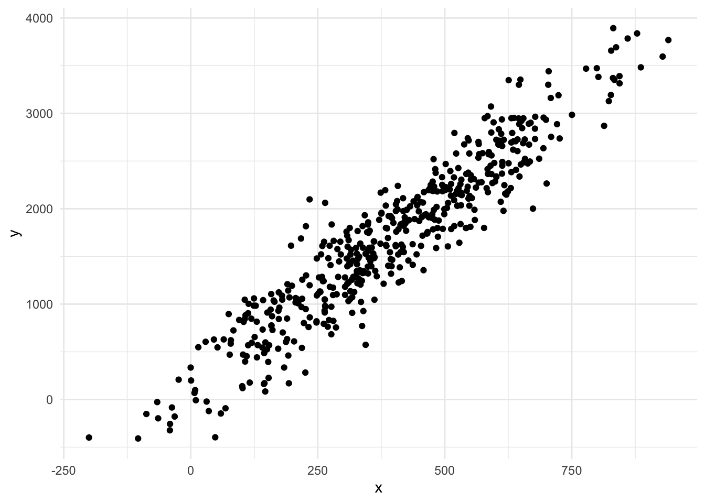
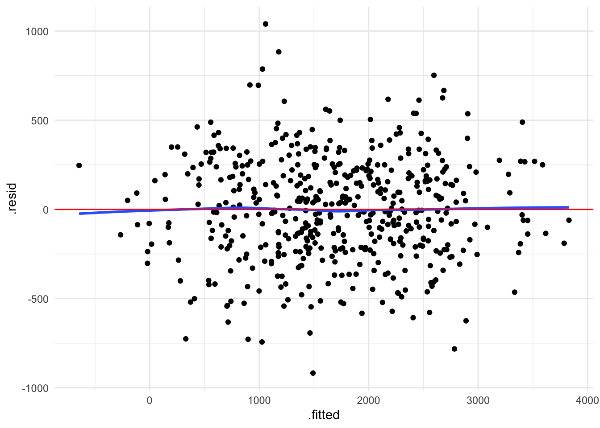
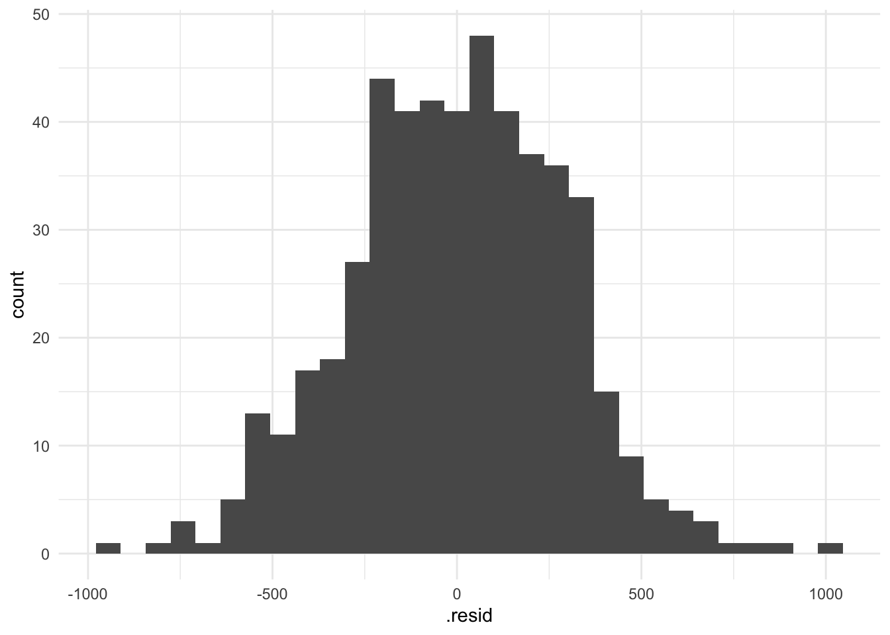
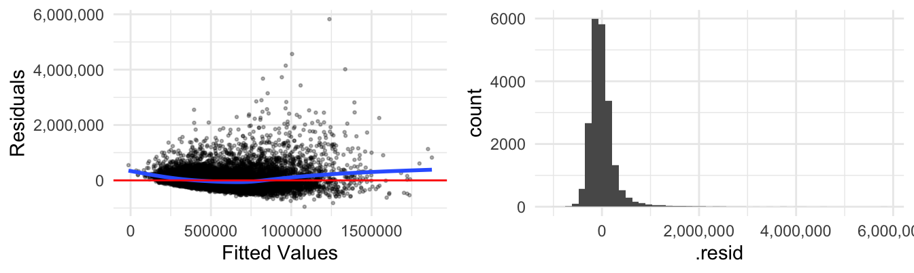
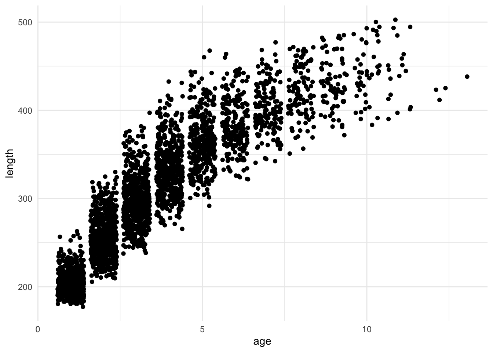

library(alr4) #NEW! For data. Let me know if you have issues installing this one)
library(GGally) #New ... maybe? For pairwise plots
library(tidyverse) #for plotting and summarizing
library(moderndive) #for nice model output
library(broom) #for nice model output
library(gridExtra) #for nicely organizing plots
library(openintro) #for data
theme_set(theme_minimal()) #changes the theme of ggplots to theme_minimal, my personal favorite
GOAL:
By the end of these notes and activities, you should be able to perform the following tasks.
- Check for non-constant variance and linearity using a residuals versus fitted values plot.
- Check for normality by looking at a histogram of the residuals.
- Know when to add a polynomial term to a model and implement it.
- Know a few key scenarios when log-transforming the response variable and/or predictor variables could help satisfy model assumptions.
- Interpret model coefficients with a log-transformed response variable.
REVIEW: Models we have explored so far - quantitative response variable
No explanatory variables. Every predicted value is the average response.
One quantitative explanatory variable.
- Intercept is the average response when explanatory variable is zero.
- Coefficient of explanatory variable is the average change in the response for a one unit change in the explanatory variable.
- One categorical explanatory variable.
- Intercept is the average response when explanatory variable is zero.
- Coefficient of an indicator variable is the difference in average response between the level of the indicator variable and the baseline/reference level.
- More than one explanatory variable.
- Interpretations much the same as above, except when interpreting each variable, it is necessary to acknowledge that there are other variables in the model. So, adding something like, “With all other variables held fixed” or “Accounting for (name of other variable)”.
- Models with only main effects imply that the effect of a variable on the response is the same, regardless of values of other variable(s) in the model. But, this effect is diffferent than if the other variables were not included in the model.
Models with interaction effects. Interpretations change depending on what types of variables are in the model, but models with interaction effects allow the relationship between each explanatory variable involved in the interaction and the response variable to differ depending on the value of the other explanatory variable involved in the interaction.
(We haven’t actually discussed this, but we’re ready to!) Models with more than two variables. The most important piece is to always acknowledge the that you’ve accounted for other variables when interpreting specific coefficients.
Residuals & Model Assumptions
The residuals in linear models are assumed to follow some assumptions.
- They should be normally distributed. (Normality)
- They should have a mean of 0 consistently.(Mean zero/linearity)
- They should have constant variance, meaning how spread out they are should not vary depending on something else. (Constant variance)
- They should be independent.
Violations of these assumptions can cause problems when we want to make inferences, which we’ll want to do very soon. We can check many of these assumptions by looking at a plot of the residuals vs. fitted values and a histogram of the residuals.
Example: assumptions satisfied
Below I simulated some data to assure assumptions are met. Do not worry about the code.
set.seed(10)
x <- rnorm(500, mean = 400, sd = 200)
y <- 100 + 4*x + rnorm(500, mean = 0, sd = 300)
simdat <- data.frame(x, y)
ggplot(simdat) +
geom_point(aes(x = x, y = y)) +
theme_minimal()

Let’s fit a model and look at some helpful plots.
sim_mod <- lm(y ~ x, data=simdat)
tidy(sim_mod)
augment(sim_mod) %>%
ggplot(aes(x=.fitted, y=.resid)) +
geom_point() +
geom_smooth(se = FALSE) +
geom_hline(yintercept = 0, color = "red")

augment(sim_mod) %>%
ggplot(aes(x=.resid)) +
geom_histogram(bins = 30)

YOUR TURN!
In the first plot, we can assess if the residuals have constant variance and mean zero. How? What might the plot look like if they didn’t?
The second plot allows us to check the normality of the residuals. How? What might it look like if it weren’t normal?
It is difficult to check for independence. Can you think of any scenarios where our data might not be independent?
Examples: assumptions not satisfied
King County house data
Let’s try this with the King County house data. First, we read in the data and do some slight modifications.
kc_house_data2 <-
house_prices %>%
filter(bedrooms<=5, bedrooms>0) %>%
mutate(grade_CAT = fct_relevel(ifelse(grade %in% "1":"7", "Low",
ifelse(grade == "8", "Medium","High")),
"Low", "Medium", "High"),
age=2015-yr_built)
Next, fit the model price ~ sqft_living15 + age.
kc_2var <- lm(price ~ sqft_living15 + age,
data=kc_house_data2)
tidy(kc_2var)
Now, let’s look at a plot of residuals vs. fitted values and a histogram of the residuals.
a1 <- augment(kc_2var) %>%
ggplot(aes(x=.fitted, y = .resid)) +
geom_point(size = .5, alpha = .3) +
geom_smooth(se=FALSE) +
geom_hline(yintercept = 0, color = "red") +
scale_y_continuous(labels = scales::comma) +
labs(x = "Fitted Values", y = "Residuals")
a2 <- augment(kc_2var) %>%
ggplot(aes(x=.resid)) +
geom_histogram(bins=50) +
scale_x_continuous(labels = scales::comma)
gridExtra::grid.arrange(a1, a2, nrow = 1)

YOUR TURN!
What do you observe in these plots? Do any assumptions appear violated?
Walleye data
Let’s look at another plot. This is a new dataset that has the age and length of walleye (a type of fish), from the alr4 package.
ggplot(walleye) +
geom_jitter(aes(x = age, y = length)) +
theme_minimal()

YOUR TURN!
- Fit a model that uses
age to explain length.
- Look at the 2 residual plots we discussed and assess them.
LS0tCnRpdGxlOiAiUmVzaWR1YWxzLCBBc3N1bXB0aW9ucywgYW5kIFRyYW5zZm9ybWF0aW9ucyIKb3V0cHV0OiAgCiAgaHRtbF9kb2N1bWVudDoKICAgIHRvYzogdHJ1ZQogICAgdG9jX2Zsb2F0OiB0cnVlCiAgICBkZl9wcmludDogcGFnZWQKICAgIGNvZGVfZG93bmxvYWQ6IHRydWUKLS0tCgpgYGB7ciwgbWVzc2FnZT1GQUxTRSwgd2FybmluZz1GQUxTRX0KbGlicmFyeShhbHI0KSAjTkVXISBGb3IgZGF0YS4gTGV0IG1lIGtub3cgaWYgeW91IGhhdmUgaXNzdWVzIGluc3RhbGxpbmcgdGhpcyBvbmUpCmxpYnJhcnkoR0dhbGx5KSAjTmV3IC4uLiBtYXliZT8gRm9yIHBhaXJ3aXNlIHBsb3RzCmxpYnJhcnkodGlkeXZlcnNlKSAjZm9yIHBsb3R0aW5nIGFuZCBzdW1tYXJpemluZwpsaWJyYXJ5KG1vZGVybmRpdmUpICNmb3IgbmljZSBtb2RlbCBvdXRwdXQKbGlicmFyeShicm9vbSkgI2ZvciBuaWNlIG1vZGVsIG91dHB1dCAKbGlicmFyeShncmlkRXh0cmEpICNmb3IgbmljZWx5IG9yZ2FuaXppbmcgcGxvdHMKbGlicmFyeShvcGVuaW50cm8pICNmb3IgZGF0YQp0aGVtZV9zZXQodGhlbWVfbWluaW1hbCgpKSAjY2hhbmdlcyB0aGUgdGhlbWUgb2YgZ2dwbG90cyB0byB0aGVtZV9taW5pbWFsLCBteSBwZXJzb25hbCBmYXZvcml0ZQpgYGAKCjo6OiB7LmFsZXJ0IC5hbGVydC1zdWNjZXNzfQo8c3Ryb25nPkdPQUw6PC9zdHJvbmc+CgpCeSB0aGUgZW5kIG9mIHRoZXNlIG5vdGVzIGFuZCBhY3Rpdml0aWVzLCB5b3Ugc2hvdWxkIGJlIGFibGUgdG8gcGVyZm9ybSB0aGUgZm9sbG93aW5nIHRhc2tzLgoKLSAgIENoZWNrIGZvciBub24tY29uc3RhbnQgdmFyaWFuY2UgYW5kIGxpbmVhcml0eSB1c2luZyBhIHJlc2lkdWFscyB2ZXJzdXMgZml0dGVkIHZhbHVlcyBwbG90LlwKLSAgIENoZWNrIGZvciBub3JtYWxpdHkgYnkgbG9va2luZyBhdCBhIGhpc3RvZ3JhbSBvZiB0aGUgcmVzaWR1YWxzLlwKLSAgIEtub3cgd2hlbiB0byBhZGQgYSBwb2x5bm9taWFsIHRlcm0gdG8gYSBtb2RlbCBhbmQgaW1wbGVtZW50IGl0LlwKLSAgIEtub3cgYSBmZXcga2V5IHNjZW5hcmlvcyB3aGVuIGxvZy10cmFuc2Zvcm1pbmcgdGhlIHJlc3BvbnNlIHZhcmlhYmxlIGFuZC9vciBwcmVkaWN0b3IgdmFyaWFibGVzIGNvdWxkIGhlbHAgc2F0aXNmeSBtb2RlbCBhc3N1bXB0aW9ucy5cCi0gICBJbnRlcnByZXQgbW9kZWwgY29lZmZpY2llbnRzIHdpdGggYSBsb2ctdHJhbnNmb3JtZWQgcmVzcG9uc2UgdmFyaWFibGUuCjo6OgoKIyBSRVZJRVc6IE1vZGVscyB3ZSBoYXZlIGV4cGxvcmVkIHNvIGZhciAtIHF1YW50aXRhdGl2ZSByZXNwb25zZSB2YXJpYWJsZQoKMC4gIE5vIGV4cGxhbmF0b3J5IHZhcmlhYmxlcy4gRXZlcnkgcHJlZGljdGVkIHZhbHVlIGlzIHRoZSBhdmVyYWdlIHJlc3BvbnNlLgoKMS4gIE9uZSBxdWFudGl0YXRpdmUgZXhwbGFuYXRvcnkgdmFyaWFibGUuCgotICAgSW50ZXJjZXB0IGlzIHRoZSBhdmVyYWdlIHJlc3BvbnNlIHdoZW4gZXhwbGFuYXRvcnkgdmFyaWFibGUgaXMgemVyby5cCi0gICBDb2VmZmljaWVudCBvZiBleHBsYW5hdG9yeSB2YXJpYWJsZSBpcyB0aGUgYXZlcmFnZSBjaGFuZ2UgaW4gdGhlIHJlc3BvbnNlIGZvciBhIG9uZSB1bml0IGNoYW5nZSBpbiB0aGUgZXhwbGFuYXRvcnkgdmFyaWFibGUuCgoyLiAgT25lIGNhdGVnb3JpY2FsIGV4cGxhbmF0b3J5IHZhcmlhYmxlLgoKLSAgIEludGVyY2VwdCBpcyB0aGUgYXZlcmFnZSByZXNwb25zZSB3aGVuIGV4cGxhbmF0b3J5IHZhcmlhYmxlIGlzIHplcm8uXAotICAgQ29lZmZpY2llbnQgb2YgYW4gaW5kaWNhdG9yIHZhcmlhYmxlIGlzIHRoZSBkaWZmZXJlbmNlIGluIGF2ZXJhZ2UgcmVzcG9uc2UgYmV0d2VlbiB0aGUgbGV2ZWwgb2YgdGhlIGluZGljYXRvciB2YXJpYWJsZSBhbmQgdGhlIGJhc2VsaW5lL3JlZmVyZW5jZSBsZXZlbC4KCjMuICBNb3JlIHRoYW4gb25lIGV4cGxhbmF0b3J5IHZhcmlhYmxlLgoKLSAgIEludGVycHJldGF0aW9ucyBtdWNoIHRoZSBzYW1lIGFzIGFib3ZlLCBleGNlcHQgd2hlbiBpbnRlcnByZXRpbmcgZWFjaCB2YXJpYWJsZSwgaXQgaXMgbmVjZXNzYXJ5IHRvIGFja25vd2xlZGdlIHRoYXQgdGhlcmUgYXJlIG90aGVyIHZhcmlhYmxlcyBpbiB0aGUgbW9kZWwuIFNvLCBhZGRpbmcgc29tZXRoaW5nIGxpa2UsICJXaXRoIGFsbCBvdGhlciB2YXJpYWJsZXMgaGVsZCBmaXhlZCIgb3IgIkFjY291bnRpbmcgZm9yIChuYW1lIG9mIG90aGVyIHZhcmlhYmxlKSIuCi0gICBNb2RlbHMgd2l0aCBvbmx5IG1haW4gZWZmZWN0cyBpbXBseSB0aGF0IHRoZSBlZmZlY3Qgb2YgYSB2YXJpYWJsZSBvbiB0aGUgcmVzcG9uc2UgaXMgdGhlIHNhbWUsIHJlZ2FyZGxlc3Mgb2YgdmFsdWVzIG9mIG90aGVyIHZhcmlhYmxlKHMpIGluIHRoZSBtb2RlbC4gQnV0LCB0aGlzIGVmZmVjdCBpcyBkaWZmZmVyZW50IHRoYW4gaWYgdGhlIG90aGVyIHZhcmlhYmxlcyB3ZXJlIG5vdCBpbmNsdWRlZCBpbiB0aGUgbW9kZWwuCgo0LiAgTW9kZWxzIHdpdGggaW50ZXJhY3Rpb24gZWZmZWN0cy4gSW50ZXJwcmV0YXRpb25zIGNoYW5nZSBkZXBlbmRpbmcgb24gd2hhdCB0eXBlcyBvZiB2YXJpYWJsZXMgYXJlIGluIHRoZSBtb2RlbCwgYnV0IG1vZGVscyB3aXRoIGludGVyYWN0aW9uIGVmZmVjdHMgYWxsb3cgdGhlIHJlbGF0aW9uc2hpcCBiZXR3ZWVuIGVhY2ggZXhwbGFuYXRvcnkgdmFyaWFibGUgaW52b2x2ZWQgaW4gdGhlIGludGVyYWN0aW9uIGFuZCB0aGUgcmVzcG9uc2UgdmFyaWFibGUgdG8gZGlmZmVyIGRlcGVuZGluZyBvbiB0aGUgdmFsdWUgb2YgdGhlIG90aGVyIGV4cGxhbmF0b3J5IHZhcmlhYmxlIGludm9sdmVkIGluIHRoZSBpbnRlcmFjdGlvbi4KCjUuICAoV2UgaGF2ZW4ndCBhY3R1YWxseSBkaXNjdXNzZWQgdGhpcywgYnV0IHdlJ3JlIHJlYWR5IHRvISkgTW9kZWxzIHdpdGggbW9yZSB0aGFuIHR3byB2YXJpYWJsZXMuIFRoZSBtb3N0IGltcG9ydGFudCBwaWVjZSBpcyB0byBhbHdheXMgYWNrbm93bGVkZ2UgdGhlIHRoYXQgeW91J3ZlIGFjY291bnRlZCBmb3Igb3RoZXIgdmFyaWFibGVzIHdoZW4gaW50ZXJwcmV0aW5nIHNwZWNpZmljIGNvZWZmaWNpZW50cy4KCiMgUmVzaWR1YWxzICYgTW9kZWwgQXNzdW1wdGlvbnMKClRoZSByZXNpZHVhbHMgaW4gbGluZWFyIG1vZGVscyBhcmUgYXNzdW1lZCB0byBmb2xsb3cgc29tZSBhc3N1bXB0aW9ucy4KCjEuICBUaGV5IHNob3VsZCBiZSBub3JtYWxseSBkaXN0cmlidXRlZC4gKE5vcm1hbGl0eSkKMi4gIFRoZXkgc2hvdWxkIGhhdmUgYSBtZWFuIG9mIDAgY29uc2lzdGVudGx5LihNZWFuIHplcm8vbGluZWFyaXR5KQozLiAgVGhleSBzaG91bGQgaGF2ZSBjb25zdGFudCB2YXJpYW5jZSwgbWVhbmluZyBob3cgc3ByZWFkIG91dCB0aGV5IGFyZSBzaG91bGQgbm90IHZhcnkgZGVwZW5kaW5nIG9uIHNvbWV0aGluZyBlbHNlLiAoQ29uc3RhbnQgdmFyaWFuY2UpCjQuICBUaGV5IHNob3VsZCBiZSBpbmRlcGVuZGVudC4KClZpb2xhdGlvbnMgb2YgdGhlc2UgYXNzdW1wdGlvbnMgY2FuIGNhdXNlIHByb2JsZW1zIHdoZW4gd2Ugd2FudCB0byBtYWtlIGluZmVyZW5jZXMsIHdoaWNoIHdlJ2xsIHdhbnQgdG8gZG8gdmVyeSBzb29uLiBXZSBjYW4gY2hlY2sgbWFueSBvZiB0aGVzZSBhc3N1bXB0aW9ucyBieSBsb29raW5nIGF0IGEgcGxvdCBvZiB0aGUgcmVzaWR1YWxzIHZzLiBmaXR0ZWQgdmFsdWVzIGFuZCBhIGhpc3RvZ3JhbSBvZiB0aGUgcmVzaWR1YWxzLgoKIyMgRXhhbXBsZTogYXNzdW1wdGlvbnMgc2F0aXNmaWVkCgpCZWxvdyBJIHNpbXVsYXRlZCBzb21lIGRhdGEgdG8gYXNzdXJlIGFzc3VtcHRpb25zIGFyZSBtZXQuIERvIG5vdCB3b3JyeSBhYm91dCB0aGUgY29kZS4KCmBgYHtyfQpzZXQuc2VlZCgxMCkKeCA8LSBybm9ybSg1MDAsIG1lYW4gPSA0MDAsIHNkID0gMjAwKQp5IDwtIDEwMCArIDQqeCArIHJub3JtKDUwMCwgbWVhbiA9IDAsIHNkID0gMzAwKQoKc2ltZGF0IDwtIGRhdGEuZnJhbWUoeCwgeSkKCmdncGxvdChzaW1kYXQpICsKICBnZW9tX3BvaW50KGFlcyh4ID0geCwgeSA9IHkpKSArCiAgdGhlbWVfbWluaW1hbCgpCmBgYAoKTGV0J3MgZml0IGEgbW9kZWwgYW5kIGxvb2sgYXQgc29tZSBoZWxwZnVsIHBsb3RzLgoKYGBge3J9CnNpbV9tb2QgPC0gbG0oeSB+IHgsIGRhdGE9c2ltZGF0KQp0aWR5KHNpbV9tb2QpCmBgYAoKYGBge3IsIG1lc3NhZ2U9RkFMU0V9CmF1Z21lbnQoc2ltX21vZCkgJT4lIAogIGdncGxvdChhZXMoeD0uZml0dGVkLCB5PS5yZXNpZCkpICsKICBnZW9tX3BvaW50KCkgKwogIGdlb21fc21vb3RoKHNlID0gRkFMU0UpICsKICBnZW9tX2hsaW5lKHlpbnRlcmNlcHQgPSAwLCBjb2xvciA9ICJyZWQiKQpgYGAKCmBgYHtyfQphdWdtZW50KHNpbV9tb2QpICU+JSAKICBnZ3Bsb3QoYWVzKHg9LnJlc2lkKSkgKwogIGdlb21faGlzdG9ncmFtKGJpbnMgPSAzMCkgCmBgYAoKOjo6IHsuYWxlcnQgLmFsZXJ0LWluZm99CjxzdHJvbmc+WU9VUiBUVVJOITwvc3Ryb25nPgoKMS4gIEluIHRoZSBmaXJzdCBwbG90LCB3ZSBjYW4gYXNzZXNzIGlmIHRoZSByZXNpZHVhbHMgaGF2ZSBjb25zdGFudCB2YXJpYW5jZSBhbmQgbWVhbiB6ZXJvLiBIb3c/IFdoYXQgbWlnaHQgdGhlIHBsb3QgbG9vayBsaWtlIGlmIHRoZXkgZGlkbid0P1wKCjIuICBUaGUgc2Vjb25kIHBsb3QgYWxsb3dzIHVzIHRvIGNoZWNrIHRoZSBub3JtYWxpdHkgb2YgdGhlIHJlc2lkdWFscy4gSG93PyBXaGF0IG1pZ2h0IGl0IGxvb2sgbGlrZSBpZiBpdCB3ZXJlbid0IG5vcm1hbD8KCjMuICBJdCBpcyBkaWZmaWN1bHQgdG8gY2hlY2sgZm9yIGluZGVwZW5kZW5jZS4gQ2FuIHlvdSB0aGluayBvZiBhbnkgc2NlbmFyaW9zIHdoZXJlIG91ciBkYXRhIG1pZ2h0IG5vdCBiZSBpbmRlcGVuZGVudD9cCjo6OgoKIyMgRXhhbXBsZXM6IGFzc3VtcHRpb25zIG5vdCBzYXRpc2ZpZWQKCiMjIyBLaW5nIENvdW50eSBob3VzZSBkYXRhCgpMZXQncyB0cnkgdGhpcyB3aXRoIHRoZSBLaW5nIENvdW50eSBob3VzZSBkYXRhLiBGaXJzdCwgd2UgcmVhZCBpbiB0aGUgZGF0YSBhbmQgZG8gc29tZSBzbGlnaHQgbW9kaWZpY2F0aW9ucy4KCmBgYHtyLCBtZXNzYWdlPUZBTFNFLCB3YXJuaW5nPUZBTFNFfQprY19ob3VzZV9kYXRhMiA8LQogIGhvdXNlX3ByaWNlcyAlPiUgCiAgZmlsdGVyKGJlZHJvb21zPD01LCBiZWRyb29tcz4wKSAlPiUgCiAgbXV0YXRlKGdyYWRlX0NBVCA9IGZjdF9yZWxldmVsKGlmZWxzZShncmFkZSAlaW4lICIxIjoiNyIsICJMb3ciLAogICAgICAgICAgICAgICAgICAgICAgICAgICAgICAgICAgICAgICAgaWZlbHNlKGdyYWRlID09ICI4IiwgIk1lZGl1bSIsIkhpZ2giKSksCiAgICAgICAgICAgICAgICAgICAgICAgICAgICAgICAgICAgICAiTG93IiwgIk1lZGl1bSIsICJIaWdoIiksCiAgICAgICAgIGFnZT0yMDE1LXlyX2J1aWx0KQpgYGAKCk5leHQsIGZpdCB0aGUgbW9kZWwgYHByaWNlIH4gc3FmdF9saXZpbmcxNSArIGFnZWAuCgpgYGB7cn0Ka2NfMnZhciA8LSBsbShwcmljZSB+IHNxZnRfbGl2aW5nMTUgKyBhZ2UsIAogICAgICAgICAgICAgICAgICAgZGF0YT1rY19ob3VzZV9kYXRhMikKdGlkeShrY18ydmFyKQpgYGAKCk5vdywgbGV0J3MgbG9vayBhdCBhIHBsb3Qgb2YgcmVzaWR1YWxzIHZzLiBmaXR0ZWQgdmFsdWVzIGFuZCBhIGhpc3RvZ3JhbSBvZiB0aGUgcmVzaWR1YWxzLgoKYGBge3IsIG1lc3NhZ2U9RkFMU0UsIGZpZy5hc3A9LjN9CmExIDwtIGF1Z21lbnQoa2NfMnZhcikgJT4lIAogIGdncGxvdChhZXMoeD0uZml0dGVkLCB5ID0gLnJlc2lkKSkgKwogIGdlb21fcG9pbnQoc2l6ZSA9IC41LCBhbHBoYSA9IC4zKSArCiAgZ2VvbV9zbW9vdGgoc2U9RkFMU0UpICsKICBnZW9tX2hsaW5lKHlpbnRlcmNlcHQgPSAwLCBjb2xvciA9ICJyZWQiKSArCiAgc2NhbGVfeV9jb250aW51b3VzKGxhYmVscyA9IHNjYWxlczo6Y29tbWEpICsKICBsYWJzKHggPSAiRml0dGVkIFZhbHVlcyIsIHkgPSAiUmVzaWR1YWxzIikKCmEyIDwtIGF1Z21lbnQoa2NfMnZhcikgJT4lIAogIGdncGxvdChhZXMoeD0ucmVzaWQpKSArCiAgZ2VvbV9oaXN0b2dyYW0oYmlucz01MCkgKwogIHNjYWxlX3hfY29udGludW91cyhsYWJlbHMgPSBzY2FsZXM6OmNvbW1hKQoKZ3JpZEV4dHJhOjpncmlkLmFycmFuZ2UoYTEsIGEyLCBucm93ID0gMSkKYGBgCgo6Ojogey5hbGVydCAuYWxlcnQtaW5mb30KPHN0cm9uZz5ZT1VSIFRVUk4hPC9zdHJvbmc+CgpXaGF0IGRvIHlvdSBvYnNlcnZlIGluIHRoZXNlIHBsb3RzPyBEbyBhbnkgYXNzdW1wdGlvbnMgYXBwZWFyIHZpb2xhdGVkPwo6OjoKCiMjIyBXYWxsZXllIGRhdGEKCkxldCdzIGxvb2sgYXQgYW5vdGhlciBwbG90LiBUaGlzIGlzIGEgbmV3IGRhdGFzZXQgdGhhdCBoYXMgdGhlIGFnZSBhbmQgbGVuZ3RoIG9mIHdhbGxleWUgKGEgdHlwZSBvZiBmaXNoKSwgZnJvbSB0aGUgYGFscjRgIHBhY2thZ2UuCgpgYGB7cn0KZ2dwbG90KHdhbGxleWUpICsgCiAgZ2VvbV9qaXR0ZXIoYWVzKHggPSBhZ2UsIHkgPSBsZW5ndGgpKSArCiAgdGhlbWVfbWluaW1hbCgpCmBgYAoKOjo6IHsuYWxlcnQgLmFsZXJ0LWluZm99CjxzdHJvbmc+WU9VUiBUVVJOITwvc3Ryb25nPgoKMS4gIEZpdCBhIG1vZGVsIHRoYXQgdXNlcyBgYWdlYCB0byBleHBsYWluIGBsZW5ndGhgLgoyLiAgTG9vayBhdCB0aGUgMiByZXNpZHVhbCBwbG90cyB3ZSBkaXNjdXNzZWQgYW5kIGFzc2VzcyB0aGVtLgo6OjoKCiMgQ29ycmVjdGluZyBtb2RlbCBhc3N1bXB0aW9ucyB3aXRoIHRyYW5zZm9ybWF0aW9ucwoKVGhlcmUgYXJlIG1hbnkgc29waGlzdGljYXRlZCBtZXRob2RzIHRoYXQgY2FuIGJlIHVzZWQgdG8gZml4IHByb2JsZW1zIHdpdGggbGluZWFyIG1vZGVsIGFzc3VtcHRpb25zLiBCdXQgYSBmYWlybHkgc2ltcGxlIHNvbHV0aW9uIHRoYXQgb2Z0ZW4gd29ya3Mgd2VsbCBpcyB0byB0cmFuc2Zvcm0gdmFyaWFibGVzLiBXZSB3aWxsIGRpc2N1c3MgdHdvIGRpZmZlcmVudCB0cmFuc2Zvcm1hdGlvbnMgYW5kIGFwcGx5IHRoZW0gdG8gdGhlIHR3byBleGFtcGxlcyBmcm9tIGFib3ZlLgoKIyMgTG9nYXJpdGhtaWMgdHJhbnNmb3JtYXRpb24KCldoZW4gdmFyaWFibGVzIHJhbmdlIGFjcm9zcyBtb3JlIHRoYW4gb25lIG9yZGVyIG9mIG1hZ25pdHVkZSBpbiB0aGVpciB2YWx1ZXMgKGllLiB0aGV5IGhhdmUgdmFsdWVzIGluIHRoZSAxLDAwMCdzIEFORCAxMCwwMDAncyBvciAxMDAsMDAwJ3MgQU5EIHRoZSAxLDAwMCwwMDAncyksIGxvZyB0cmFuc2Zvcm1pbmcgY2FuIG9mdGVuIGhlbHAgZml4IG5vbi1jb25zdGFudCB2YXJpYW5jZS4gTGV0J3MgbG9vayBhdCB0aGUgZm9sbG93aW5nIHNjYXR0ZXJwbG90IG1hdHJpeC4gSSBkaWQgYSBsb2cgYmFzZSAyIHRyYW5zZm9ybWF0aW9uIG9mIGJvdGggKnByaWNlKiBhbmQgKnNxZnRfbGl2aW5nMTUqLiBXaGF0IGRvIHlvdSBub3RpY2U/CgpgYGB7ciwgbWVzc2FnZT1GQUxTRX0Ka2NfaG91c2VfZGF0YTIgJT4lIAogIG11dGF0ZShsb2cyX3ByaWNlID0gbG9nMihwcmljZSksCiAgICAgICAgIGxvZzJfc3FmdCA9IGxvZzIoc3FmdF9saXZpbmcxNSkpICU+JSAKICBzZWxlY3QoYWdlLCBzcWZ0X2xpdmluZzE1LCBsb2cyX3NxZnQsIGxvZzJfcHJpY2UpICU+JSAKICBnZ3BhaXJzKCkKYGBgCgpOb3csIGxldCdzIGZpdCBhIG1vZGVsIHRoYXQgdXNlcyAqbG9nMl9wcmljZSogYXMgdGhlIHJlc3BvbnNlIGFuZCAqYWdlKiBhbmQgKmxvZzJfc3FmdCogYXMgZXhwbGFuYXRvcnkgdmFyaWFibGVzLiBGaXJzdCwgSSBuZWVkIHRvIGNyZWF0ZSBhIG5ldyBkYXRhc2V0IHdpdGggdGhlc2UgdmFyaWFibGVzLgoKYGBge3J9CmtjX2hvdXNlX2xvZyA8LSBrY19ob3VzZV9kYXRhMiAlPiUgCiAgbXV0YXRlKGxvZzJfcHJpY2UgPSBsb2cyKHByaWNlKSwKICAgICAgICAgbG9nMl9zcWZ0ID0gbG9nMihzcWZ0X2xpdmluZzE1KSkKa2NfbG9nIDwtIGxtKGxvZzJfcHJpY2UgfiBhZ2UgKyBsb2cyX3NxZnQsCiAgICAgICAgICAgICBkYXRhID0ga2NfaG91c2VfbG9nKQpnZXRfcmVncmVzc2lvbl90YWJsZShrY19sb2cpCmBgYAoKOjo6IHsuYWxlcnQgLmFsZXJ0LWluZm99CjxzdHJvbmc+WU9VUiBUVVJOITwvc3Ryb25nPgoKVXNlIHRoZSByZXNpZHVhbCBwbG90cyB0byBjaGVjayB0aGUgbW9kZWwgYXNzdW1wdGlvbnMuIEhvdyBkbyB0aGV5IGxvb2sgbm93Pwo6OjoKCiMjIEFkZGluZyBhIHBvbHlub21pYWwgdGVybSB0byB0aGUgbW9kZWwKCkZvciB0aGUgd2FsbGV5ZSBkYXRhLCB0aGUgYmlnZ2VzdCBwcm9ibGVtIHNlZW1lZCB0byBiZSB0aGF0IHRoZSBtZWFuIHdhcyBub3QgemVybyB0aHJvdWdob3V0IHRoZSByYW5nZSBvZiBmaXR0ZWQgdmFsdWVzLiBUaGlzIGlzIGJlY2F1c2UgdGhlIHJlbGF0aW9uc2hpcCBiZXR3ZWVuIGBhZ2VgIGFuZCBgbGVuZ3RoYCB3YXMgbm90IGxpbmVhciB0byBiZWdpbiB3aXRoLgoKV2UgY2FuIHRyeSB0byBhZGRyZXNzIHRoaXMgYnkgYWRkaW5nIGEgcXVhZHJhdGljIChvciBoaWdoZXIgb3JkZXIgcG9seW5vbWlhbCkgdGVybSB0byBvdXIgbW9kZWwuIEkgaGF2ZSBkb25lIHRoYXQgYmVsb3cuIE5vdGljZSB0aGF0IHlvdSBuZWVkIHRvIGVuY2xvc2UgdGhlIHBvbHlub21pYWwgdGVybSBpbiBgSSgpYC4KCmBgYHtyfQp3YWxsZXllX3F1YWRyYXRpYyA8LSAgbG0obGVuZ3RoIH4gYWdlICsgSShhZ2VeMiksIAogICAgICAgICAgICAgICAgICAgICAgICAgZGF0YT13YWxsZXllKQp0aWR5KHdhbGxleWVfcXVhZHJhdGljKQpgYGAKCjo6OiB7LmFsZXJ0IC5hbGVydC1pbmZvfQo8c3Ryb25nPllPVVIgVFVSTiE8L3N0cm9uZz4KCjEuICBQbG90IHRoaXMgbW9kZWwgb24gdGhlIHNjYXR0ZXJwbG90IG9mIGBhZ2VgIHZlcnN1cyBgbGVuZ3RoYC4KMi4gIENyZWF0ZSB0aGUgdHdvIHJlc2lkdWFsIHBsb3RzIGFuZCBldmFsdWF0ZSB0aGVtLgozLiAgVHJ5IGludGVycHJldGluZyB0aGUgY29lZmZpY2llbnRzIG9mIHRoZSBtb2RlbC4KOjo6CgojIyBJbnRlcnByZXRpbmcgYSBtb2RlbCBhZnRlciB0cmFuc2Zvcm1pbmcgdmFyaWFibGVzCgpJbnRlcnByZXRhdGlvbiBjYW4gZ2V0IGEgYml0IHRyaWNreSBhZnRlciB0cmFuc2Zvcm1pbmcgdmFyaWFibGVzLiBXZSB1c3VhbGx5IHN0aWxsIHByZWZlciB0byBpbnRlcnByZXQgdGhlIG1vZGVsIGluIHRoZSBvcmlnaW5hbCB1bml0cy4gV2hlbiBkb2luZyBsb2cgdHJhbnNmb3JtYXRpb25zLCBpdCB3aWxsIGJlIGhlbHBmdWwgdG8gcmVtZW1iZXIgc29tZSBydWxlcyBvZiBsb2dzIG9mIGV4cG9uZW50cyAoc2VlIHRoZSBoZWxwIHNoZWV0IG9uIHRoZSBtb29kbGUgcGFnZSkuIEJlbG93IHlvdSB3aWxsIHdvcmsgdGhyb3VnaCBhbiBleGFtcGxlIHVzaW5nIHRoZSBmb2xsb3dpbmcgbW9kZWwuCgpgYGB7cn0KdGlkeShrY19sb2cpCmBgYAoKOjo6IHsuYWxlcnQgLmFsZXJ0LWluZm99CjxzdHJvbmc+WU9VUiBUVVJOITwvc3Ryb25nPgoKMS4gIFdyaXRlIGRvd24gdGhlIG1vZGVsIGVxdWF0aW9uIGluIHRlcm1zIG9mIGBwcmljZWAuIFRoYXQgaXMsIHJhdGhlciB0aGFuIGhhdmluZyBgbG9nMl9wcmljZWAgb24gdGhlIGxlZnQgaGFuZCBzaWRlIG9mIHRoZSBlcXVhdGlvbiwgYHByaWNlYCBpcyBvbiB0aGUgbGVmdCBoYW5kIHNpZGUuCgoyLiAgVXNpbmcgdGhlIGVxdWF0aW9uIGZyb20gdGhlIHByZXZpb3VzIHN0ZXAsIGhvdyBkb2VzIGFuIGluY3JlYXNlIG9mIDEgeWVhciBpbiBhZ2Ugb2YgYSBob21lIHR5cGljYWxseSBhZmZlY3QgdGhlIHByaWNlICh3aXRoIGFsbCBvdGhlciB2YXJpYWJsZXMgaW4gdGhlIG1vZGVsIGhlbGQgZml4ZWQpPyBJdCBtaWdodCBiZSBoZWxwZnVsIHRvIHRyeSBhbiBleGFtcGxlLgoKMy4gIEhvdyBkb2VzIGRvdWJsaW5nIHNxdWFyZSBmb290YWdlIHR5cGljYWxseSBhZmZlY3QgdGhlIHByaWNlICh3aXRoIGFsbCBvdGhlciB2YXJpYWJsZXMgaW4gdGhlIG1vZGVsIGhlbGQgZml4ZWQpPyBUaGVyZSBpcyBhIHJlYXNvbiBJJ20gYXNraW5nIHRoaXMgcXVlc3Rpb24gaW4gdGhpcyB3YXkgLi4uCgo0LiAgTm93IGJ1aWxkIGEgbW9yZSBjb21wbGV4IG1vZGVsIHdpdGggKmxvZzJfcHJpY2UqIGFzIHRoZSByZXNwb25zZS4gQWRkIGEgY2F0ZWdvcmljYWwgdmFyaWFibGUgYW5kL29yIGludGVyYWN0aW9uIGVmZmVjdC4gSG93IGRvIHlvdSBpbnRlcnByZXQgdGhlIGNvZWZmaWNpZW50cyBvZiBhIGNhdGVnb3JpY2FsIHZhcmlhYmxlPyBBbiBpbnRlcmFjdGlvbiBlZmZlY3Q/Cjo6Ogo=